Crear una página web que muestre un catálogo de productos. Utiliza una tabla para mostrar el nombre y el precio de cada producto, y agrega una imagen para cada uno de ellos. Además, incluye una lista desordenada con características clave de cada producto.
| Producto |
Precio del producto |
Vista del producto |
Caracteristicas |
| Cebolla blanca |
0.50 |
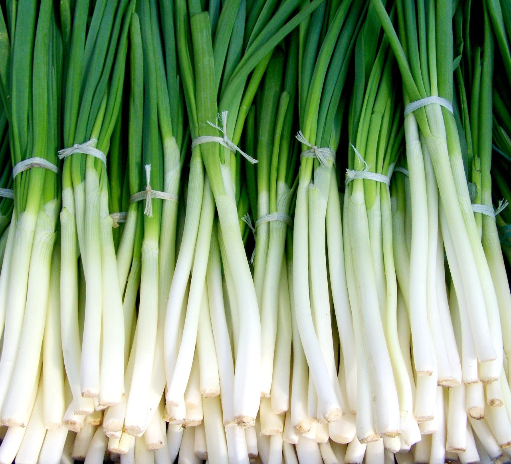 |
- Sabor distintivo: Las cebollas tienen un sabor característico y distintivo
- Versatilidad en la cocina: Las cebollas se utilizan en una amplia variedad de platos y cocinas
- Contenido de fitonutrientes: Las cebollas contienen varios fitonutrientes y compuestos antioxidantes
|
| Manzanas rojas |
1.50 |
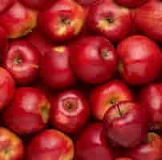 |
- Variedad de sabores: Las manzanas pueden ser dulces, ácidas o una combinación de ambos.
- Textura crujiente: La mayoría de las variedades de manzanas tienen una textura crujiente.
- Alto contenido de fibra: Las manzanas son ricas en fibra dietética.
|
| Bananas |
1.00 |
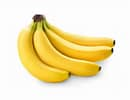 |
- Rica en potasio: Las bananas son una excelente fuente de potasio
- Energía rápida: Las bananas contienen carbohidratos de fácil digestión
- Fácil de transportar: La cáscara protectora de las bananas las hace ideales como refrigerio portátil
|
| Naranjas |
1.25 |
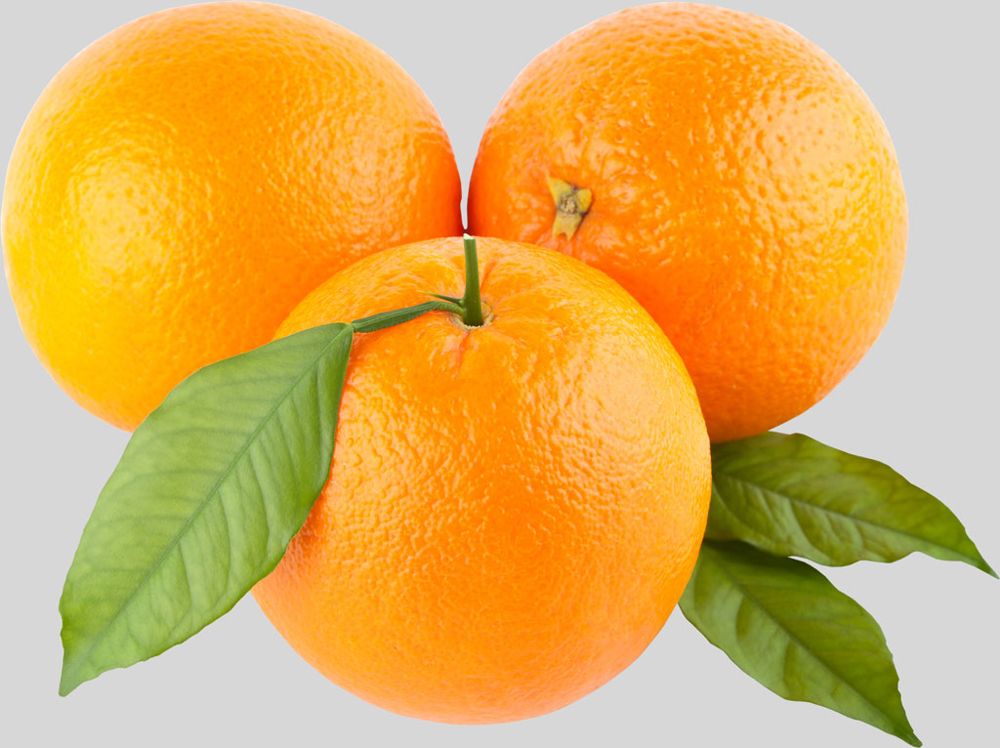 |
- Elevado contenido de vitamina C: Las naranjas son conocidas por ser una excelente fuente de vitamina C
- Sabor cítrico: Las naranjas tienen un sabor característicamente refrescante y cítrico
- Versatilidad: Las naranjas se pueden consumir frescas, exprimidas en jugo
|
Crear una galería de fotos que muestre una serie de imágenes. Utiliza una tabla para organizar las imágenes en filas y columnas. Además, agrega una lista ordenada con descripciones breves de cada imagen.
| |
- Amanecer en una playa tropical
- El cielo está pintado de tonos rosados y naranjas
- Se pueden ver palmeras oscilantes contra el cielo matutino
|
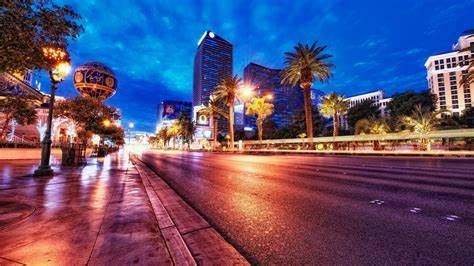 |
- Vibrante energía de una ciudad iluminada por la noche
- Los edificios se alzan imponentes contra el cielo oscuro, sus luces parpadeantes crean un laberinto de colores brillantes y reflejos en las calles abajo.
- La calle forma serpenteantes ríos de luz, mientras que en la lejanía se pueden ver las luces de otros edificios.
|
| 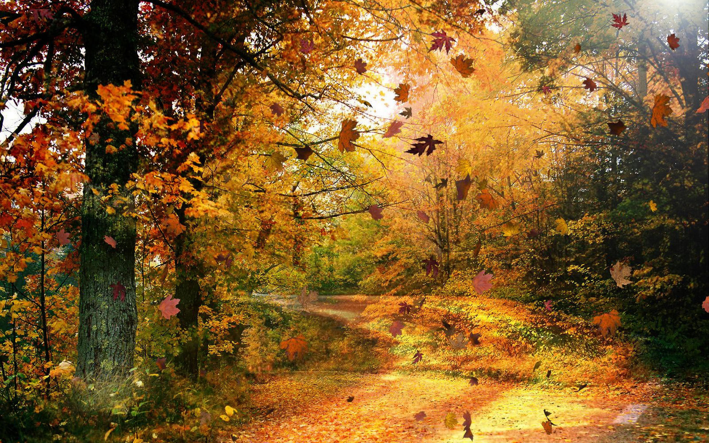 |
- Un denso bosque se transforma en un espectáculo de colores otoñales.
- Los árboles están adornados con hojas de tonos dorados, rojos y anaranjados.
- La luz del sol se filtra a través de las ramas
|
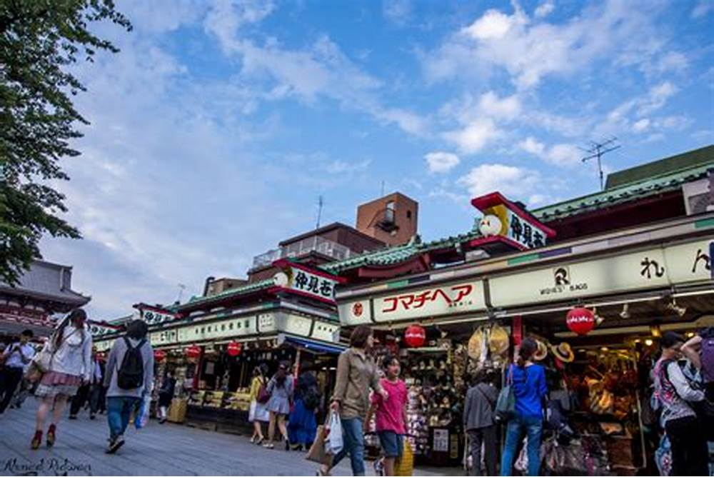 |
- Imagen bulliciosa muestra un animado mercado callejero en una ciudad asiática.
- La gente transita entre los puestos, charlando animadamente y deleitándose con los aromas tentadores que flotan en el aire.
- Los edificios antiguos y los letreros luminosos completan el telón de fondo.
|
| 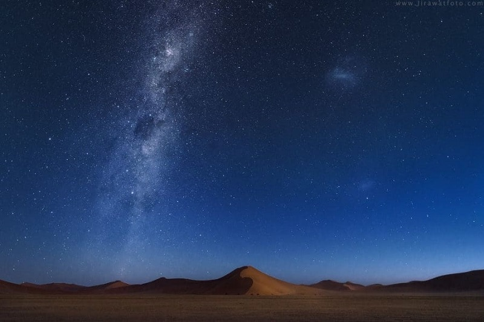 |
- Un cielo nocturno despejado y salpicado de estrellas
- La Vía Láctea se extiende majestuosamente a través del firmamento
- Refugio acogedor en medio de la inmensidad del paisaje desértico.
|
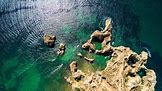 |
- Muestra imponentes acantilados de piedra que se alzan majestuosamente sobre las aguas azules del océano.
- Las olas rompen con fuerza contra la base de los acantilados.
- Contraste impresionante entre la tierra y el mar.
|
| 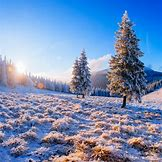 |
- Los árboles están pesadamente cargados de nieve
- Paisaje de ensueño donde cada rama y cada hoja están cubiertas por un suave manto blanco.
- El silencio del invierno lo envuelve todo, mientras que la luz del sol se filtra entre los árboles.
|
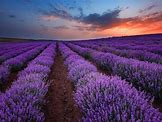 |
- Este campo de lavanda en plena floración es un estallido de color y fragancia.
- Las interminables filas de lavanda púrpura se extienden hasta donde alcanza la vista.
- Vista impresionante y aromática.
|